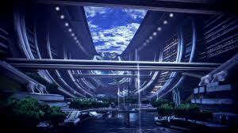
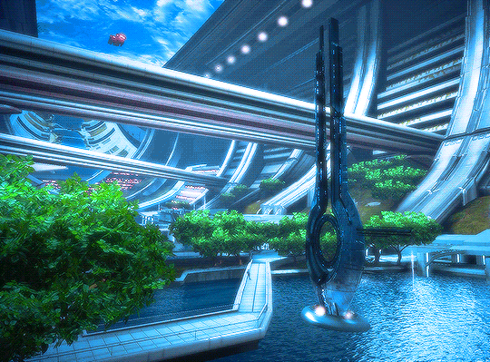
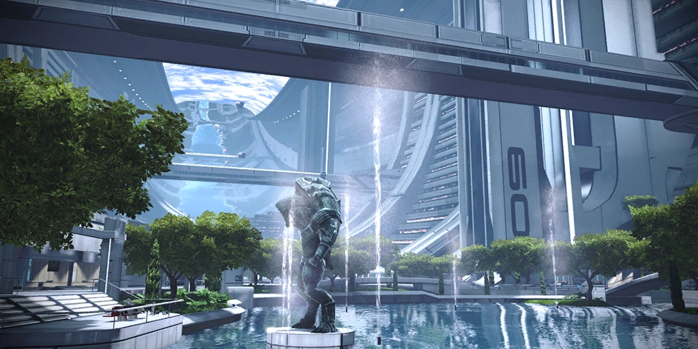
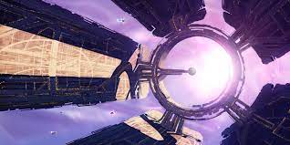
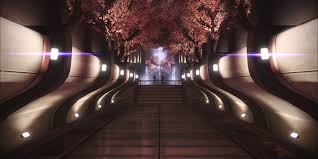
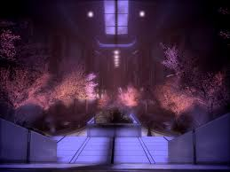
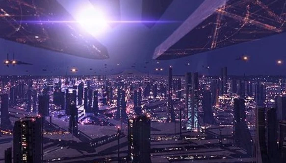
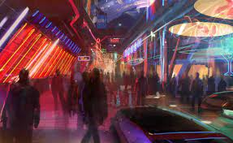
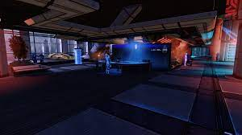

The Presidium
The Presidium is a vast, circular area with towering skyscrapers, lush gardens, and beautiful architecture. It is considered the most prestigious and exclusive district of the Citadel. The area is open to members of all races, but strict security measures are in place to maintain order and ensure the safety of the Council members and other important individuals.
The Presidium is designed to create a serene and peaceful atmosphere. It features elegant walkways, calm water fountains, and carefully manicured gardens, creating a sense of tranquility amidst the bustling activity of the Citadel. The architecture incorporates a blend of organic and synthetic elements, reflecting the merging of different alien cultures and technological advancements.
A statue of a Krogan warrior is displayed at the edge of the lake. It was built to commemorate the efforts of the Krogan in the rachni wars, a conflict against an exponentially expanding insect race that lasted nearly 300 years.
The Tower
The Citadel Tower is a colossal structure and serves as the heart of the Citadel. It is an iconic landmark, visible from various points within the Citadel. It features a distinctive, tapering design with multiple levels and a central spire that extends upward into space. The tower's exterior is constructed of sleek metallic materials, and its overall architecture blends futuristic aesthetics with grandeur.
The interior of the Citadel Tower houses numerous administrative and governmental facilities, including the Citadel Council Chambers where the leaders of the major alien races convene. The Council Chambers are a circular room at the pinnacle of the tower, offering a breathtaking view of the surrounding space through large windows.
The tower also contains other important areas, such as embassies representing different species, offices for diplomats and politicians, and various support facilities. The lower levels of the tower house docking bays for starships and transportation systems connecting to different parts of the Citadel.
The Wards
Each of the five "arms" of the citadel house the colossal urban landscape known as the Wards. They serve as a vibrant and diverse melting pot, housing various alien species and serving as a hub for housing, commerce, and social interaction.
The Wards are divided into several levels, each catering to different aspects of society. The lower levels of the Wards are often referred to as the "Lower Wards" or the "Undercity." These areas are characterized by crowded, dimly lit streets, with numerous shops, clubs, and bars lining the narrow pathways. The Lower Wards are home to some of the less fortunate inhabitants of the Citadel, including refugees and individuals seeking a life away from the prying eyes of the upper levels.
As one ascends through the levels, the Wards become more affluent and developed. The middle levels are known for their bustling markets, luxury apartments, and high-end establishments. Here, one can find high-class restaurants, upscale stores, and extravagant entertainment venues. The middle levels also house important government offices, embassies, and corporate headquarters, making it a hub for political maneuvering and economic activity.